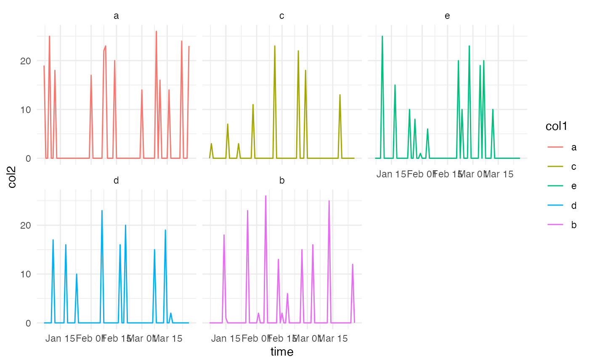

complete_time.Rdsimilar to expand grid - but in expand.grid the algo does not infer missing dates from the timeseries our function does !!
complete_time(df)
complete_time_factors(df)The dataframe or tibble to operate on
An expanded data.frame of all time, and optionally all factor permutations
complete_time_factors: Apply every combination of variable factors for complete time series.
require(ggplot2)
#> Loading required package: ggplot2
#>
#> Attaching package: ‘ggplot2’
#> The following object is masked from ‘package:crayon’:
#>
#> %+%
require(tibble)
#> Loading required package: tibble
require(dplyr)
#> Loading required package: dplyr
#> Warning: package ‘dplyr’ was built under R version 4.1.2
#>
#> Attaching package: ‘dplyr’
#> The following objects are masked from ‘package:stats’:
#>
#> filter, lag
#> The following objects are masked from ‘package:base’:
#>
#> intersect, setdiff, setequal, union
# time series
ts <- as.Date("2022-01-03"):as.Date(Sys.Date())
ts <- sort(
as.Date(
ts[sample(c(TRUE,FALSE),size = 101,replace = TRUE,prob = c(0.7,0.3))],
origin='1970-01-01')
)
df <- tibble::tibble(time=as.Date(ts),
col1=sample(replace=TRUE,letters[c(1:5)],size=length(ts)),
col2=sample(replace=TRUE,1:26,size=length(ts)),
)
time_name <- sapply(df,class)[sapply(df,class)=='Date']%>%names()
new_df <- complete_time_factors(df)
#similar to expand grid - but in expand.grid the
#algo does not infer missing dates from the timeseries
# our function does !!
df%>%
dplyr::count(time,wt=col2)%>%
dplyr::mutate(n-lag(n,1))%>%head(10)
#> # A tibble: 10 × 3
#> time n `n - lag(n, 1)`
#> <date> <int> <int>
#> 1 2022-01-06 19 NA
#> 2 2022-01-07 3 -16
#> 3 2022-01-09 25 22
#> 4 2022-01-10 25 0
#> 5 2022-01-11 17 -8
#> 6 2022-01-12 18 1
#> 7 2022-01-14 18 0
#> 8 2022-01-15 1 -17
#> 9 2022-01-16 7 6
#> 10 2022-01-17 15 8
new_df%>%
dplyr::count(time,wt=col2)%>%
dplyr::mutate(n-lag(n,1))%>%head(10)
#> time n n - lag(n, 1)
#> 1 2022-01-06 19 NA
#> 2 2022-01-07 3 -16
#> 3 2022-01-08 0 -3
#> 4 2022-01-09 25 25
#> 5 2022-01-10 25 0
#> 6 2022-01-11 17 -8
#> 7 2022-01-12 18 1
#> 8 2022-01-13 0 -18
#> 9 2022-01-14 18 18
#> 10 2022-01-15 1 -17
#compare BEFORE and
ggplot2::ggplot(df)+
ggplot2::geom_line(ggplot2::aes(time,col2,col=col1))+
ggplot2::facet_wrap(~col1)+
ggplot2::theme_minimal()

#... and after
ggplot2::ggplot(new_df)+
ggplot2::geom_line(ggplot2::aes(time,col2,col=col1))+
ggplot2::facet_wrap(~col1)+
ggplot2::theme_minimal()
